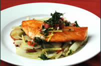

Menu Cafe Fontenebleau
Francesco and Jane Bienni welcome you

Appetizers
-
Roasted Tomato Soup
Served with goat cheese croutons and basil puree. -
Summer Salad/b>
Organic butter lettuce with apples, blood oranges, and gorgonzola, tossed with raspberry vinaigrette. -
Fondue of Brie, Goat Cheese, and Gruyere
Served with green apples and garlic crostini. Good for sharing. -
Crispy Flatbread
Topped with asiago, prosciutto, and rocket. -
Yellow-fin Ahi Tatar
Served on a bed of shredded cabbage with avocado relish and a green peppercorn dressing.

Entrees
-
Pancetta-wrapped Sea Scallops
Drizzled with tarragon puree. Served with baked cauliflower au gratin in a tangy Gruyere sauce. -
Cajun Seafood Bouillabaisse
With crawfish, scallops, catfish, crab, and mussels. Served with Southern-style cornbread and honey butter. -
Cavatappi Pasta with Spicy Chickpea Sauce
Tossed with grilled eggplant, green olives, and sun dried tomatoes. Topped with Mediterranean feta. -
Sage-rubbed Double-cut Pork Chop
Topped with a ragout of mushrooms and chunky pancetta. Served with griddle corn cakes. -
Lasagna Bolognese
House-made pasta between layers of slow-cooked pork and beef Bolognese sauce. Served with organic asparagus. -
Sake-soaked Kobe Beef Tartar
Served with fontina-stuffed squash blossom tempura with cream wasabi sauce.

Desserts
-
Tiramissu
cool, refreshing Italian dessert. -
Baked Pears with Caramel Sauce
Topped with house-made vanilla-bean ice cream. -
Pumpkin Creme Brulee
Served with our famous ginger snap cookies. -
New York Cheesecake
Creamy traditional cheesecake topped with dark chocolate sauce and fresh-picked strawberries. -
Sacher Torte
Three layers of dark chocolate cake, filled with house-made apricot jam, covered in a creamy, rich chocolate glaze.

Friday catch of the day
Alaskan Halibut with a Rich Loire Valley Beurre Blanc Sauce
Served with mashed purple
Peruvian potatoes and haricot verts.